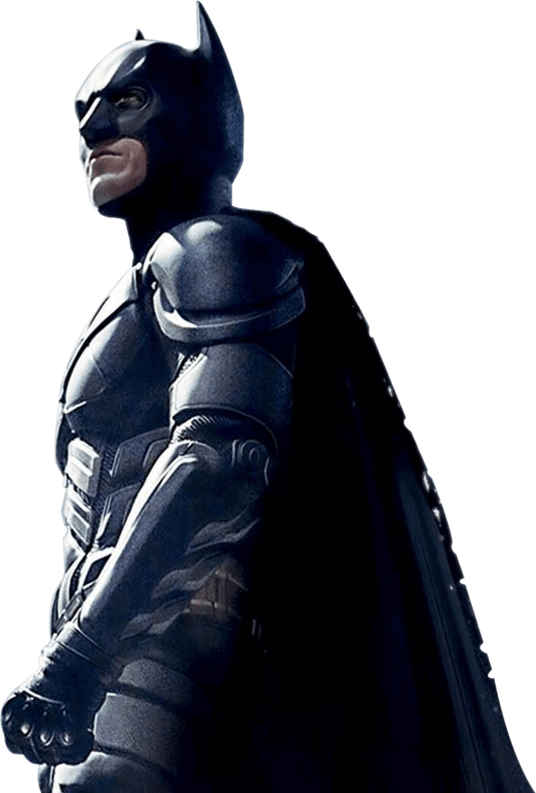
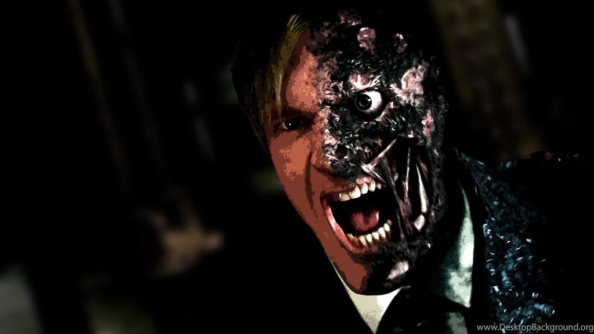

Introduction

With the help of allies Lt. Jim Gordon and DA Harvey Dent, Batman has been able to keep a tight lid on crime in Gotham City. But when a vile young criminal calling himself the Joker suddenly throws the town into chaos, the caped Crusader begins to tread a fine line between heroism and vigilantism.
Characters
Joker - A psychopathic illegalist mastermind portraying himself as an
"agent of chaos", who
rises from the criminal underworld by thrusting Gotham into anarchy and drawing Batman ever closer
to crossing the fine line between heroism and vigilantism. the Joker has a Glasgow smile, and his
trademark chalk-white skin and red lips are makeup rather than the result of chemical bleaching, as
in the traditional portrayal of the character. Throughout the film, the Joker states his desire to
upset social order through crime, and comes to define himself by his conflict with Batman.

Batman - A billionaire socialite who, after witnessing his parents' death
in a mugging at age
8, travels the
world for seven years before returning home to operate as a bat-masked vigilante hailed as Gotham
City's "Dark Knight", using fear against the city's criminal underworld at night. Can he quit and
have an ordinary life? The kind of manic
intensity someone has to have to maintain the passion and the anger that they felt as a child, takes
an effort after a while, to keep doing that. At some point, you have to exorcise your demons
Two face - The district attorney hailed as Gotham's "White Knight", whose
campaign against the
criminal
underworld leaves half of his face disfigured, turning him into a murderer with a split-personality
bent on revenge. Whereas Dent is depicted as a crime boss in most characterizations, Nolan chose to
portray him as a twisted vigilante to emphasize his role as Batman's counterpart. Eckhart explained,
"[He] is still true to himself. He's a crime fighter, he's not killing good people. He's not a bad
guy, not purely."[35][36] For Dent, Eckhart "kept on thinking about the Kennedys", particularly
Robert F. Kennedy, who was "idealistic, held a grudge and took on the Mob". He had his hair
lightened and styled to make him appear more dashing. Nolan told Eckhart to not make Dent's criminal
persona "jokey with slurping sounds or ticks"
Quotes
What doesn't kill you simply makes you ... stranger.
You either die a hero ... or live long enough to see yourself become the villian.
Some men aren't looking for anything logical, like money. They can't be bought, bullied, reasoned, or
negotiated with.
Some men just want to watch the world burn.
Let's put a smile on that face ... Why so serious ???!!

Can you avenge evil without becoming it???
Madness, as you know, is like gravity, all it takes is a little push.
About Us
Rating
Genre
Original Language
Director
Producer
Writer
Release Date
Runtime
PG-13
Fantasy, Action, Adventure
English
Christopher Nolan
Emma Thomas
Charles Roven
Christopher Nolan
Jonathan Nolan
Christopher Nolan
Jul 18, 2008
2h32m
Copyright Oct 2020. If you are good at something,
never do it for free ??!!!